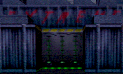
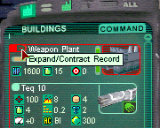
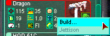
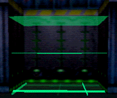

| In order for your Weapon Plant to build weapons, you need to put them in there. To stow your weapon jitters from the overhead view, simply drag them from your backpack onto your Weapon Plant. To stow all your weapons at once, simply point at your Weapon plant and hit "F3".
To stow your weapons from 1st person mode, stear into the weapon paddock, and press the "F3" key. |
 |
| If you look at your Weapon Plant record, you will see that its inventory bar is partly filled; keep an eye on this to know when its capacity is filled. Now expand the Weapon Plant record and look at the weapon Jitters. |  |
| Find the "Firmpoint" icon (looks like a rivet) and look at the different values. The avatar has two firmpoints, so can hold weapons rated 2 or 1. Some armors can increase this to 3 or even 4. Weapons of 5 firmpoints can only be used by Rovers, which have varied Firmpoints ratings. Build a weapon that suits you. |  |
| When the build effect ends you must enter the paddock to pick it up. It will move to your Weapon Inventory, where you can equip it. If you received armor Jitters, build an Armor Factory and some armor, and then equip it like the weapon, by moving it to the shield icon below the avatar portrait. |  |